I build explainable AI and resilient backend systems.
Informatics Engineering graduate building software and AI systems across the full engineering lifecycle: backend architecture, database design, LLM fine-tuning, private RAG, and MLOps. Grounded in Python, TypeScript, and end-to-end system design.
A multi-year record of advancing, placing, and winning across national and global engineering competitions.
NATIONAL / SEP 2026
02
place
2nd Place — PIDI DIGDAYA x HACKATHON 2026
Our team won second place at PIDI DIGDAYA x HACKATHON 2026, a national competition organized by Bank Indonesia in September 2026, with our project YUDHA, a gamified recruitment-preparation platform for CPNS and BUMN candidates.
MY CONTRIBUTION Backend engineering for YUDHA’s real-time battle engine, matchmaking, transactional match resolution, and study-session APIs.
Placed first in Universitas Sam Ratulangi’s selection for the SATRIA DATA 2024 Big Data Challenge.
02 / SELECTED PROJECTS
Selected Projects
Explore the work. Open a project for the problem, my contribution, engineering decisions, and results.
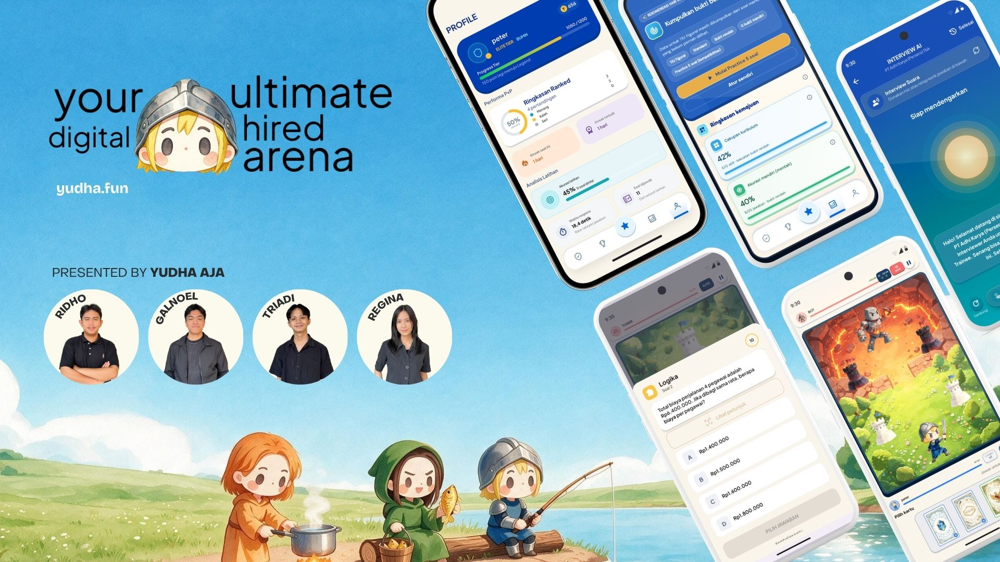
BACKEND ENGINEERING / APR–SEP 2026YUDHA: Gamified Exam Prep PlatformCPNS and BUMN preparation, powered by real-time battles and a reliable study backend.View project ↗
SERVER-AUTHORITATIVE CARD BATTLES
Competitive exam practice with consistent match state.
YUDHA (Your Ultimate Digital Hiring Arena) is a recruitment-preparation platform for Indonesian CPNS and BUMN candidates. Its product scope connects Solo learning, real-time card battles, explainable analytics, and AI mock interviews with text and voice.
My role
Backend developer responsible for the NestJS and Socket.IO battle engine, matchmaking, transactional match resolution, and study-session APIs.
Recognition
2nd place at PIDI DIGDAYA x HACKATHON 2026, a national competition organized by Bank Indonesia in September 2026.
Matchmaking and recovery
Upstash Redis Lua scripts implement target-aware FIFO matchmaking, private room codes, and a 30-second window to recover disconnected players.
Transactional game state
Supabase PostgreSQL RPCs resolve matches idempotently, apply combo-scaled damage and healing, and update persistent rank points without exposing direct table writes. Competitive rank progression is non-seasonal.
Study continuity
REST endpoints lock question sessions and produce deterministic performance analytics. A NestJS background scheduler sends streak-rescue notifications through Firebase Cloud Messaging (FCM).
Product direction
The PRD defines Solo learning, evidence-based recommendations, and AI interview practice. These describe the broader product; my contribution here is the backend work outlined above.
Planned capabilities
Learning System V2 remains gated, and web-based Assessment is a future validation lane. Neither is presented here as a completed delivery.
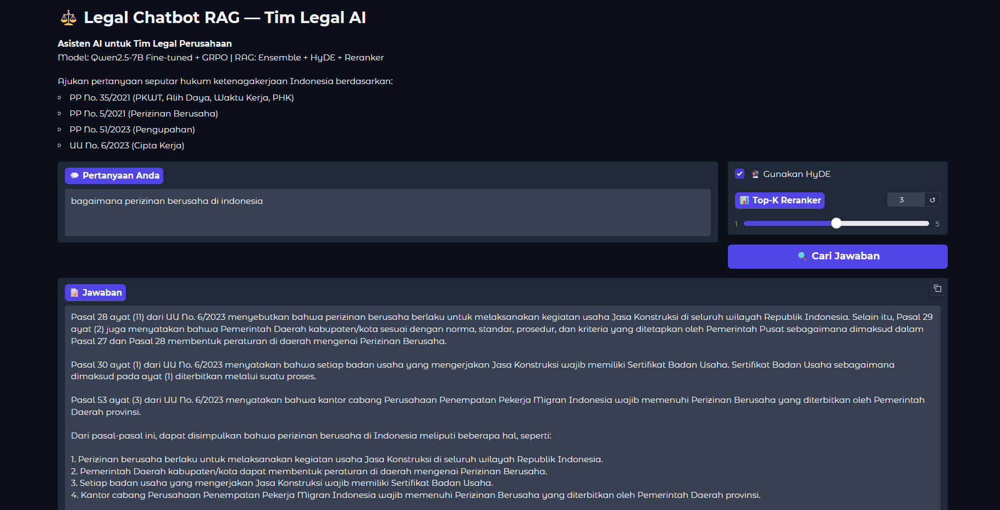
LLM FINE-TUNING + RAG / JUL 2026Reasoning-Driven Legal AI AssistantFine-tuned legal reasoning and hybrid retrieval over Indonesian labor-law documents.View project ↗
INDONESIAN LABOR LAW RETRIEVAL
Fine-tuned reasoning paired with multi-stage document retrieval.
Developed a legal AI assistant using Qwen 2.5 7B, domain-specific training, and advanced RAG over more than 1,900 pages of Indonesian labor law documents.
Model training
Fine-tuned Qwen 2.5 7B with QLoRA and Group Relative Policy Optimization (GRPO), using custom multi-objective rewards to train structured reasoning for labor law compliance queries.
Retrieval architecture
Combined HyDE (Hypothetical Document Embeddings), parent-child hierarchical chunking, and a hybrid BM25 + ChromaDB ensemble with Reciprocal Rank Fusion (RRF).
Retrieval confidence
Applied a FlashRank cross-encoder reranker, confidence-threshold gating, and DuckDuckGo fallback to the retrieval pipeline.
Delivery
Published merged 16-bit model artifacts on Hugging Face Hub and served the assistant through an interactive Gradio interface.
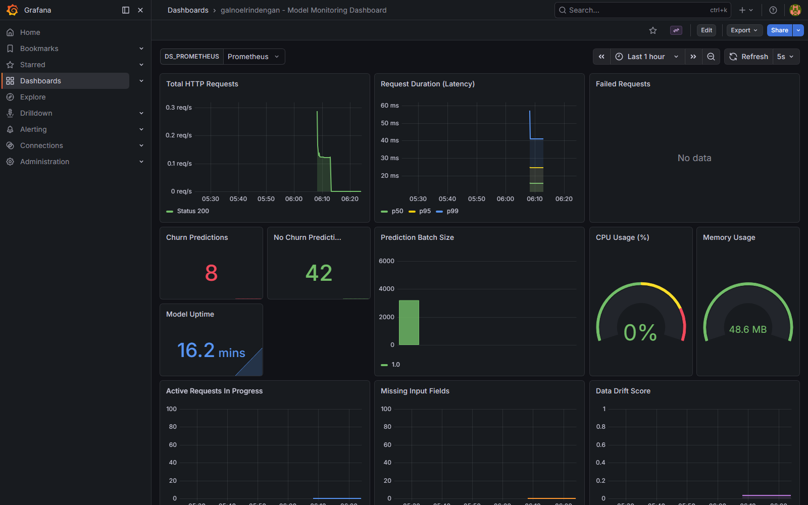
MODEL DELIVERY + TELEMETRY / JUN 2026MLOps & Model Observability PipelineFrom versioned model experiments to automated delivery and live serving telemetry.View project ↗
END-TO-END MLOPS
Automated model delivery with real-time serving visibility.
Built a pipeline spanning model artifact versioning, automated testing, container publishing, inference telemetry, and operational alerts.
Continuous delivery
Connected MLflow, Docker, and GitHub Actions to run automated unit tests, version model artifacts, and publish images to Docker Hub without manual release steps.
Serving telemetry
Built a custom Prometheus exporter to track real-time inference throughput, request error rates, and p95 latency.
Observability
Provisioned automated Grafana dashboards to inspect model-serving behavior and service health.
Incident detection
Configured multi-tier alerting rules to trigger incident notifications on latency spikes and service degradation.
GENERATIVE AI / JUN 2026Generative Diffusion Image SuiteA controllable image workspace for generation, inpainting, and outpainting.View project ↗
GENERATION, INPAINTING, AND OUTPAINTING
A complete diffusion workflow in an interactive image workspace.
Implemented an end-to-end Stable Diffusion 1.5 image suite for controlled generation, masked editing, and canvas expansion.
Generation controls
Configured deterministic seed scheduling, negative-prompt conditioning, and sampling hyperparameter tuning.
Inpainting
Engineered custom canvas-mask workflows to regenerate selected image regions with boundary blending.
Outpainting
Extended images beyond the original canvas using masked generation and blended boundaries.
Delivery
Packaged the pipeline into an interactive Streamlit web application for real-time latent generation and visual post-processing.
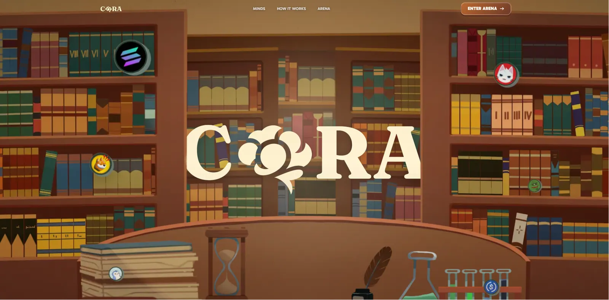
REAL-TIME SYSTEMS / APR–MAY 2026CORA settlement oracleAuthoritative multiplayer state and an auditable settlement path for on-chain games.View project ↗
SYSTEMS & ON-CHAIN STATE
Deterministic game settlement across real-time and on-chain boundaries.
Built the server-side match loop and verification path for a multi-user Solana game where concurrent state, wagers, and settlement had to agree.
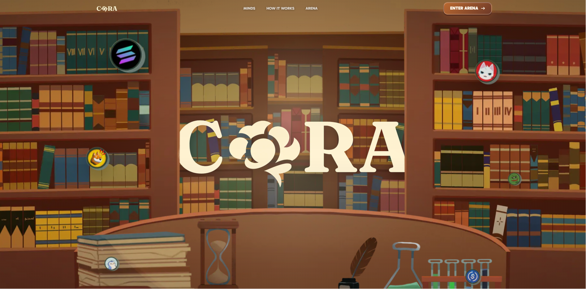
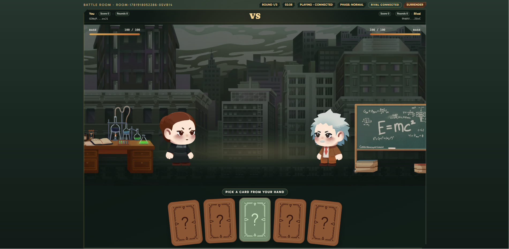
01MatchBun + Hono WebSocket state
02VerifyServer evaluates game payload
03SignDeterministic oracle signature
04SettleNative SOL payout execution
Context
Production GameFi system handling concurrent matches and native SOL wagers.
My role
Backend state-machine and settlement-oracle engineering.
Critical decision
Step-lock transaction parameters so racing match events could not produce divergent payouts.
Result
A deterministic verification and payout path connected to a real-time multiplayer loop.
Solana Actions
Implemented Actions API endpoints, automated wSOL wrapping for native SOL wagers, and a sequential deposit state machine to prevent race conditions.
On-chain verification
Integrated MagicBlock Ephemeral to mirror real-time gameplay on-chain and provide verifiable fairness proofs.
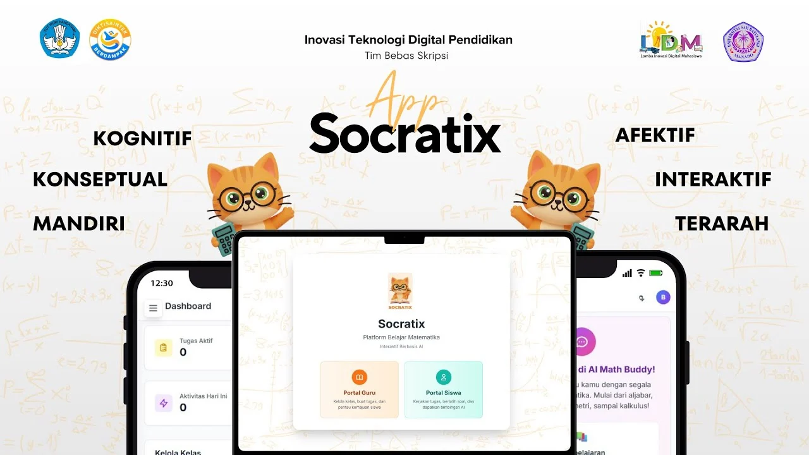
INTELLIGENT PIPELINES / 2025–2026Socratix: Multi-Agent Socratic AI Math TutorA Socratic math tutor that routes, validates, guides, and visualizes each problem.View project ↗
MULTI-AGENT SOCRATIC MATH TUTOR
Three teaching agents, bounded by deterministic math validation.
Built a Next.js 15 and React 19 tutoring interface backed by a modular NestJS pipeline that plans each problem, validates the math, asks guiding questions, and renders concept-specific visuals without leaking the final answer.
REQUEST TRACE / 3x + 5 = 14GROQ SSE STREAM ACTIVE
01 / AGENT 1Route & Plan~5 ms regex fast-path + LLM fallback; extract type, variables, and known values
02 / VALIDATORProve the MathMath.js AST substitution checks equations before response generation
03 / AGENT 2GuideBuild a step-by-step Socratic prompt and request the next useful visual
04 / AGENT 3VisualizePlan balance scales, fraction bars, number lines, or coordinate scenes
Frontend
Next.js 15 and React 19 real-time chat consumes Server-Sent Event token chunks and renders dynamic SVG/Canvas teaching visuals.
Backend
NestJS orchestrates the agents, authentication guards, and persistent database state as a modular API pipeline.
My AI engineering contribution
Designed the two-tier Router and Planner micro-agent pipeline with Groq and NestJS, structuring input classification and context extraction for Socratic tutoring.
Routing validation
Combined regex fast-paths with LLM fallbacks through the Vercel AI SDK, reaching approximately 5 ms routing and 100% classification accuracy on a 20-sample validation matrix.
Context extraction
Used Zod schema validation and JSON-only prompting to capture equations, problem subtypes, and multimodal parameters while applying prompt-injection mitigations.
Resilience
Added defensive error recovery and graceful degradation to handle edge-case queries and prevent downstream validation failures.
Inference
gpt-oss-120b on the Groq API provides low-latency streamed reasoning, with Redis serving as a cache-aside layer.
Persistence
Supabase PostgreSQL through Prisma ORM stores durable sessions while Redis holds ephemeral state.
Critical decision
Evaluate equations through Math.js Abstract Syntax Tree substitution before response generation, preventing LLM math hallucinations.
Teaching result
A structured pipeline that separates routing, validation, Socratic questioning, and visual scene planning so students receive guidance rather than exposed final answers.
Recognition
11th place in the Education Track at the ASEAN AI Hackathon (March 2026); 1st place at UNSRAT in the LIDM Digital Education Technology Innovation division (September 2025).
MULTIMODAL TRANSFORMERS / JUL–AUG 2025Multimodal Fish-Freshness ClassifierMultimodal fish-freshness classification with visual evidence behind model decisions.View project ↗
VISION + NUMERICAL FUSION
A dedicated multimodal model for fish-freshness classification.
Built the main GEMASTIK XVIII research entry by aligning fish imagery and e-nose gas sensor streams, then fusing both modalities through contrastive learning and bidirectional parallel cross-attention.
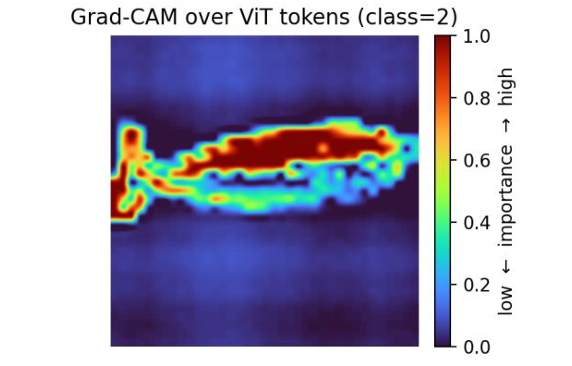
FUSION-01
Grad-CAM evidence over vision tokens used to inspect the model’s spatial focus.
Context
The main GEMASTIK XVIII research entry: a fish-freshness classifier built from image and numerical inputs.
My role
Parallel fusion architecture, contrastive-learning pipeline, class-imbalance handling, and attention analysis.
Critical decision
Preserve both modalities through parallel cross-attention instead of flattening image and numerical features into one representation.
Data preparation
Aligned DaFiF images and e-nose gas sensor streams with nearest-neighbor timestamp matching, Z-score anomaly filtering, and edge-detection augmentations.
Model architecture
Combined a ViT with a DINOv2 backbone and an MLP sensor encoder, aligned with CLIP-style contrastive loss before bidirectional parallel cross-attention fusion.
Result
Training with Focal Tversky Loss achieved 85.4% accuracy, 84.3% macro F1, and 92.7% peak F1 for the “Marginal” freshness class.
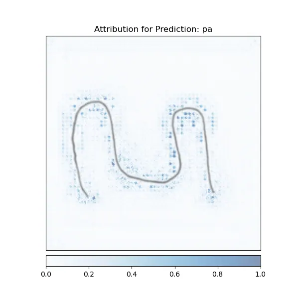
COMPUTER VISION / OCT 2025Javanese Aksara CoaT ClassifierRecognizing Javanese script with CoaT and inspecting how the model reaches its predictions.View project ↗
20-CLASS HANDWRITING RECOGNITION
A separate transformer challenge for handwritten Javanese Aksara.
Built an independent image-classification pipeline during the five-hour GEMASTIK XVIII final challenge. CoaT (Co-Scale Conv-Attentional Transformers) captures multi-scale stroke representations across 20 handwritten Javanese script classes.
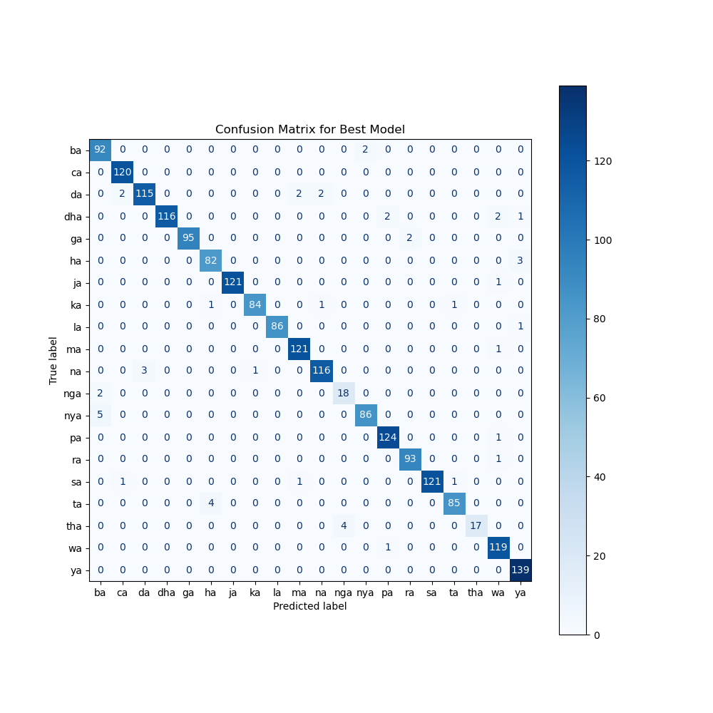
COAT-20
Confusion matrix showing predictions across 20 handwritten Javanese script categories.
XAI-02
Interpretation output used to inspect structural feature extraction after preprocessing.
Context
A separate five-hour, closed-sandbox final challenge at the national GEMASTIK XVIII competition.
My role
Image preprocessing, class weighting, transformer evaluation, and model interpretation.
Critical decision
Correct class imbalance and compare CoaT, Swin, and EfficientNet rather than trusting raw accuracy.
Training strategy
Used frozen patch-embedding feature extraction followed by progressive fine-tuning with AdamW and Kornia Focal Loss (γ = 2.0, α = 0.25) to address severe class imbalance.
Explainability
Applied Captum Integrated Gradients to generate pixel-level attribution heatmaps and inspect stroke-level attention for shortcut learning.
Result
96.7% test macro F1-score across 20 handwritten Javanese Aksara classes, evaluated through validation and final competition sets.
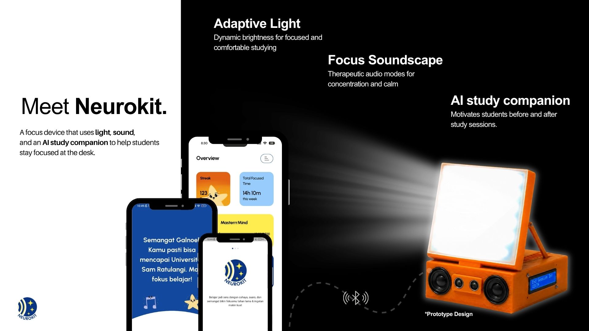
HARDWARE + AI / JUL–NOV 2025NEUROKIT therapeutic frameworkAdaptive light, therapeutic audio, and an AI study companion in one connected device.View project ↗
3RD PLACE / PIMNAS 38 PRESENTATION CATEGORY
A physical neurotherapeutic prototype, carried through human validation.
Led a multimodal neurotherapeutic toolkit integrating an ESP32 lighting and audio device, a Bluetooth-connected Flutter app, and personalized audio affirmations using OpenRouter LLM and Prosa TTS APIs.
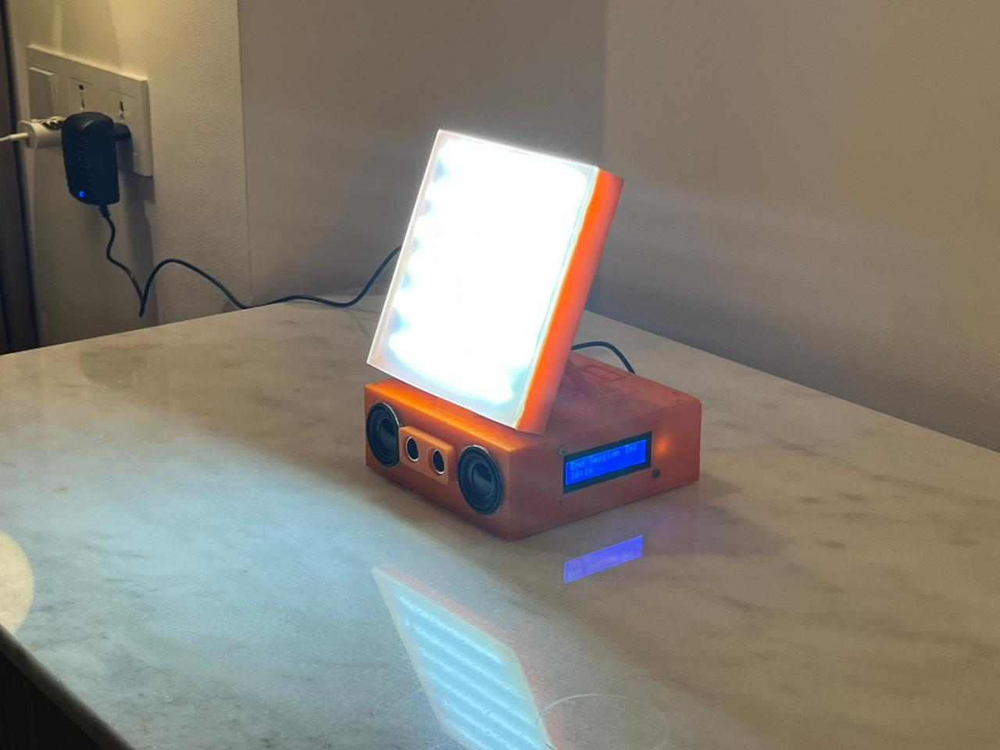
HW-01
15 × 14.5 × 20 cm enclosure integrating PWM-controlled light, audio, sensing, and display.
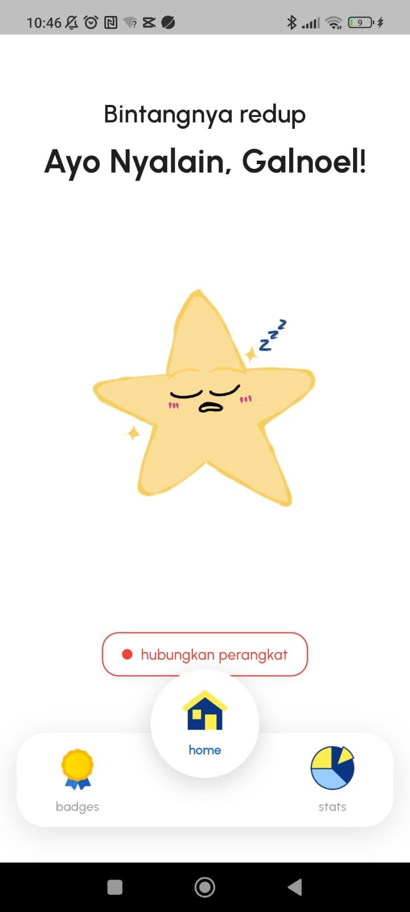
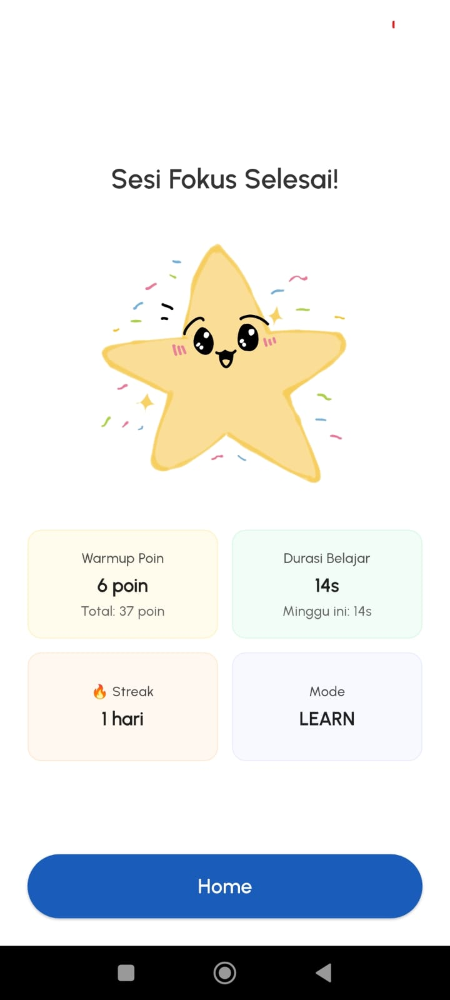
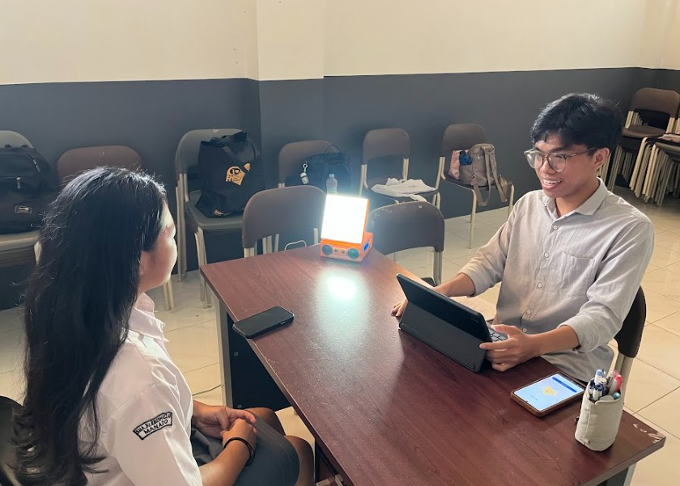
WMS-11.35
Wechsler Memory Scale functional trials recorded an 11.35% improvement in student attention span and memory retention.
Context
Funded research prototype advanced to national PIMNAS 38 presentation and defense.
My role
Product lifecycle lead across enclosure, electronics, Flutter, AI integration, testing, and defense.
Lighting control
Used an HC-SR04 ultrasonic sensor and PWM-regulated MOSFET circuitry to maintain 500–600 lux (536 lux average) across user distances of 30–70 cm.
Mobile experience
Built Bluetooth controls for Learn/Chill audio therapy, gamified study sessions, and personalized spoken affirmations through OpenRouter and Prosa TTS.
Validation
Wechsler Memory Scale (WMS) functional trials measured an 11.35% improvement in student attention span and memory retention.
Recognition
3rd place (Bronze Medal), PKM-KC presentation category at PIMNAS 38.
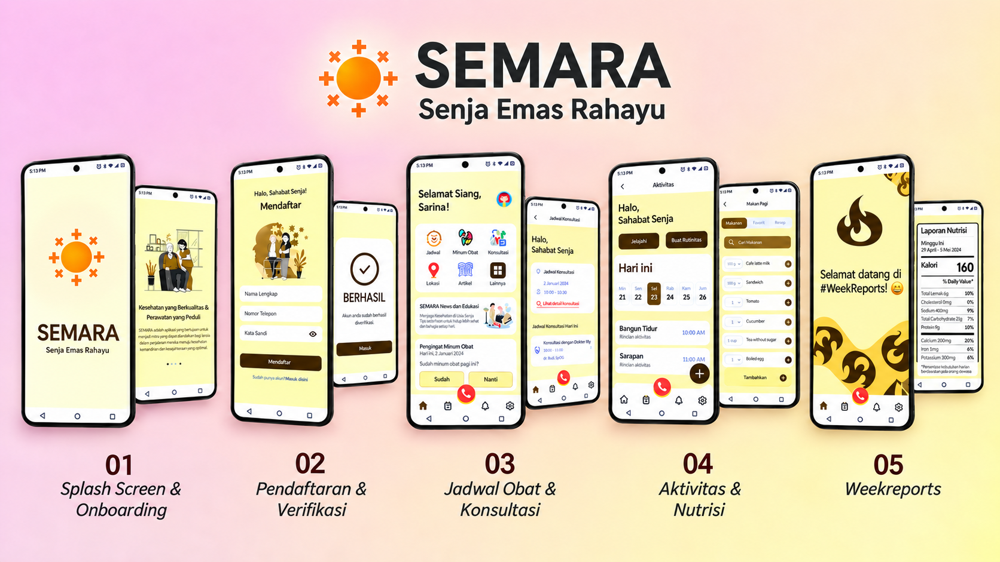
MOBILE APPLICATION / 2024SEMARA: Senja Emas RahayuA mobile app for older adults, bringing daily routines, medication reminders, and nutrition tracking together.View project ↗
1ST PLACE / GEMASTIK XVII SOFTWARE DEVELOPMENT AT UNSRAT
Daily care and routines in one mobile experience.
SEMARA (Senja Emas Rahayu) is a mobile application for older adults. The project brings together medication reminders, consultation schedules, activity planning, nutrition logs, and weekly reports.
Audience
Older adults managing daily routines and personal care.
App experience
Onboarding and registration lead into a dashboard with medication reminders, consultation schedules, activity planning, food logs, and weekly nutrition reports.
Recognition
1st place at Universitas Sam Ratulangi in the GEMASTIK XVII Software Development division (2024).
02B / SUPPORTING PROJECTS
Supporting Projects
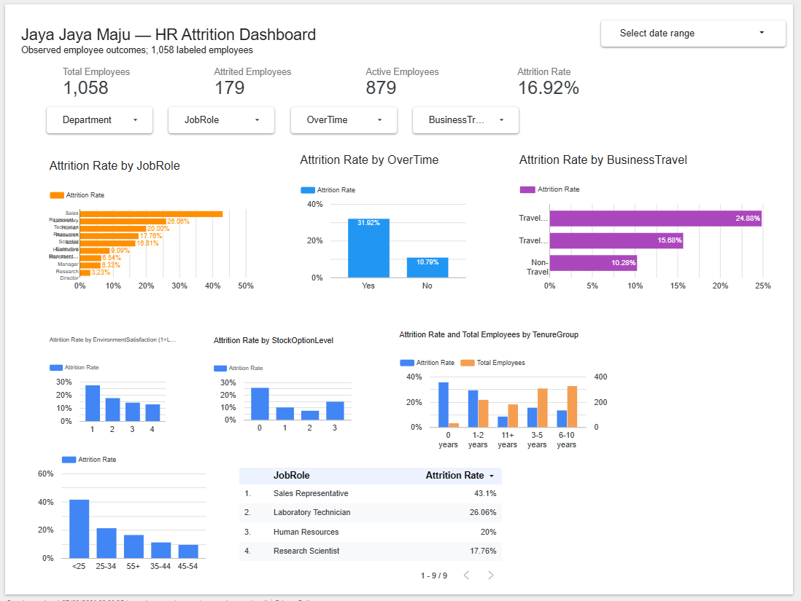
DATA SCIENCE
Employee Attrition Analysis
Explored employee attrition patterns and retention priorities through an HR dashboard, with model evaluation documented in the project notebook.
HR ANALYTICS
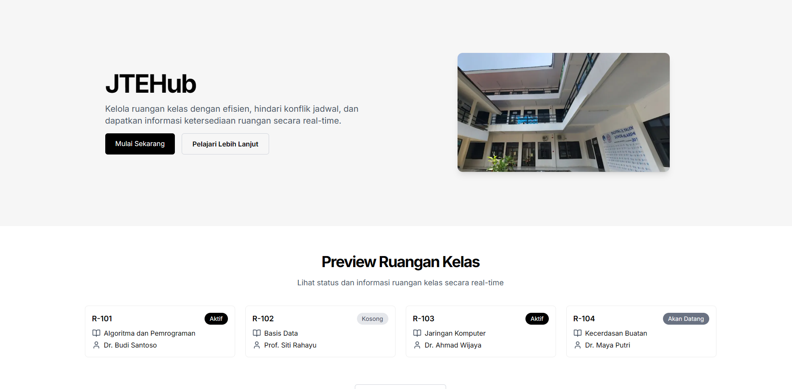
2024–2025
JTEHub allocation platform
Built timezone-safe NestJS scheduling and overlap checks to prevent double bookings in Supabase PostgreSQL, with JWT guards and role-based admin access.
Applied Apriori and Eclat to Indonesian elderly anthropometric data, producing seven ergonomic rules for public-facility recommendations at GEMASTIK XVII.
DATA MINING
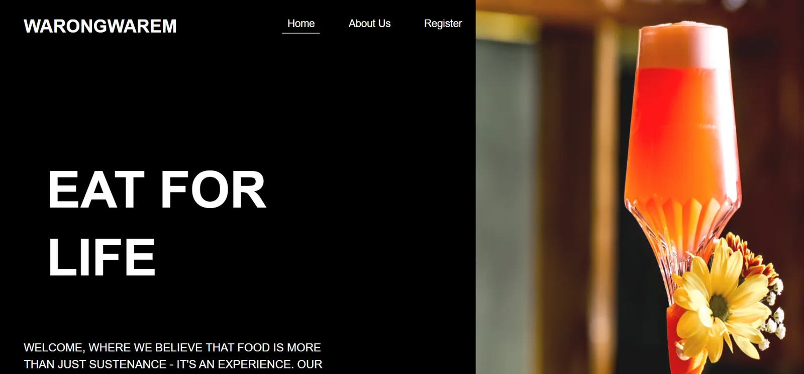
ACADEMIC ARCHIVE
Warong Warem full stack
Early full-stack work combining a relational schema, a PHP interface, and structural form validation.
LEGACY
03 / FIELD NOTES
Experience, Leadership, and Education
Professional and community work in Manado, Indonesia, supported by a foundation in Informatics Engineering.
JUN–AUG 2025PT. Bank SulutGo
AI Engineer & RAG System Intern
Private retrieval without data leaving the bank.
Architected and deployed an on-premise RAG assistant using Ollama, n8n, and Supabase pgvector to address internal information silos. Kept inference and vector storage on bank servers to prevent data leaving for third-party cloud services.
Authored use case, sequence, and entity relationship diagrams (ERD), documenting how the Next.js frontend interacts with the AI backend.
Constraint
Local-only inference and storage
Supervisor evaluation
95/100 discipline and attitude · 90/100 presentation skills
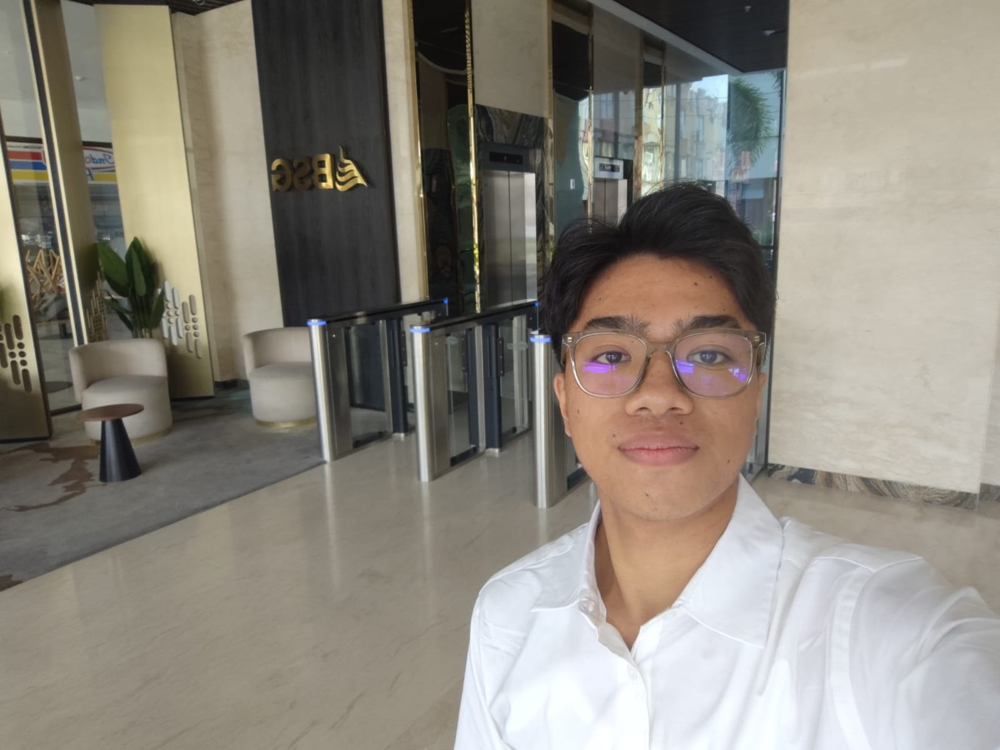
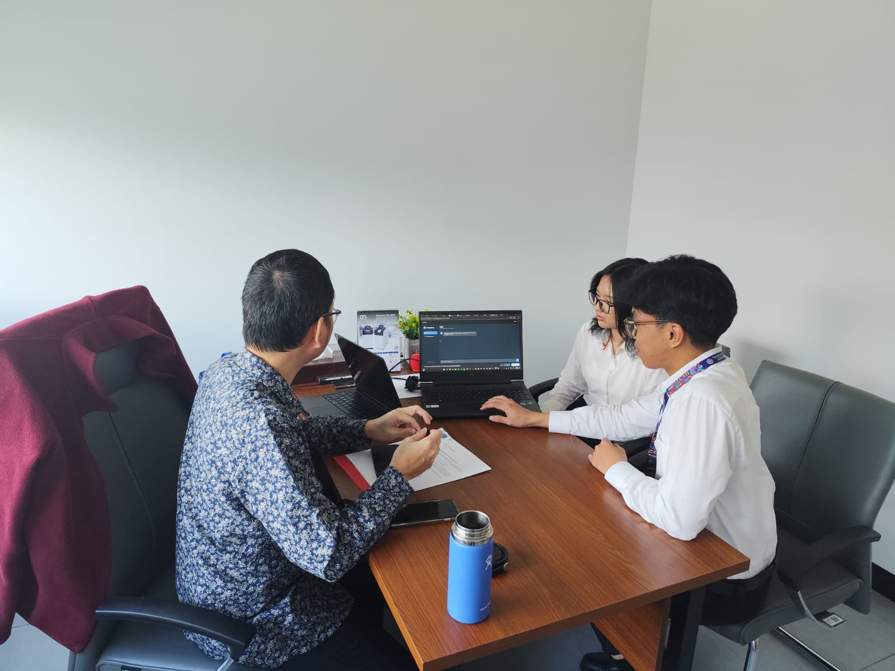
JUL–NOV 2024UNSRAT IT Community
Development Lead / TECHOFEST 2024 Chatbot Project
Technical direction across a multidisciplinary cohort.
Directed a 12-person multidisciplinary engineering team to build and deploy a Gemini AI chatbot for the faculty’s student organization. Deployed the model through Flask and gRPC for efficient serialization and communication between services.
Coordinated the complete web and mobile application development, and supervised the data engineering team’s collection workflows and analysis pipelines.
Delivery team
12 multidisciplinary contributors
Delivery scope
AI backend, web and mobile applications, data pipelines
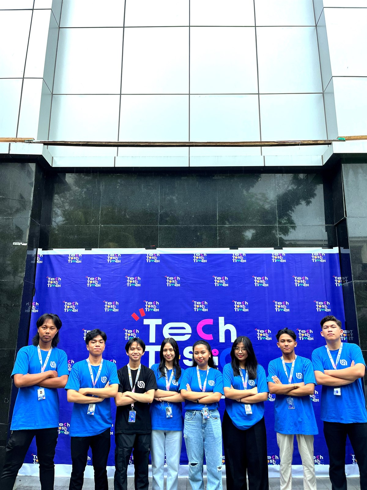
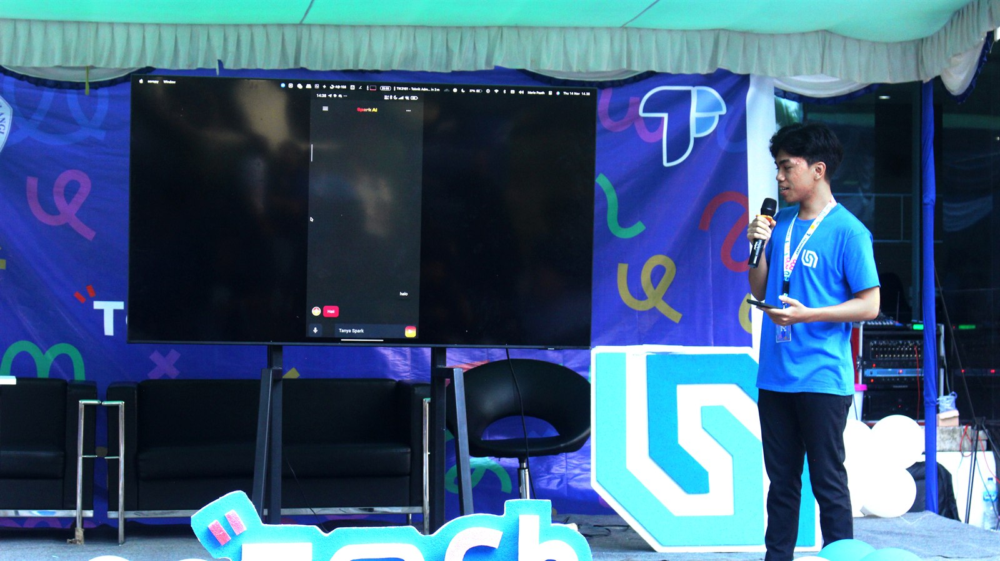
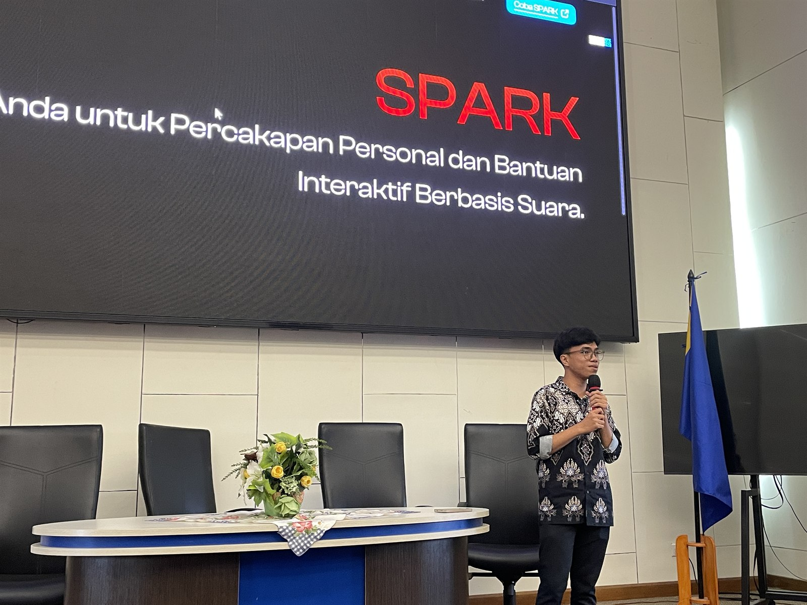
JAN–JUL 2024UNSRAT IT Community
Committee of Machine Learning Division
Teaching machine learning through applied projects.
Designed a six-month curriculum spanning fundamental to advanced machine learning, and led workshops for more than 20 members. Mentored a five-person junior team through the full lifecycle of a chatbot development project.
Workshop cohort
20+ community members
Project mentoring
5-person junior team
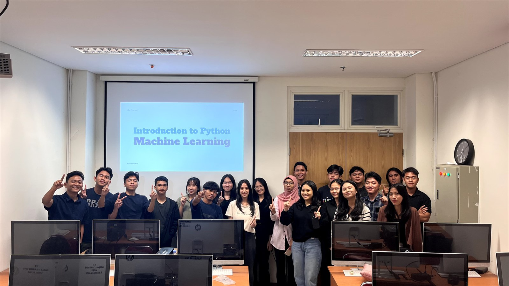
2022–2026Universitas Sam Ratulangi
Education / Manado, Indonesia
Bachelor of Computer Science (S.Kom) in Informatics Engineering.
Relevant coursework: Artificial Intelligence, Data Structures & Algorithms, Database, Probability and Statistics, and Software Engineering.
Cumulative GPA
3.93 / 4.00
Study period
2022–2026
04 / OPEN CHANNEL
Looking for an AI/backend engineer who can carry work from experiment to production?
Let’s talk about the system you are trying to make reliable.